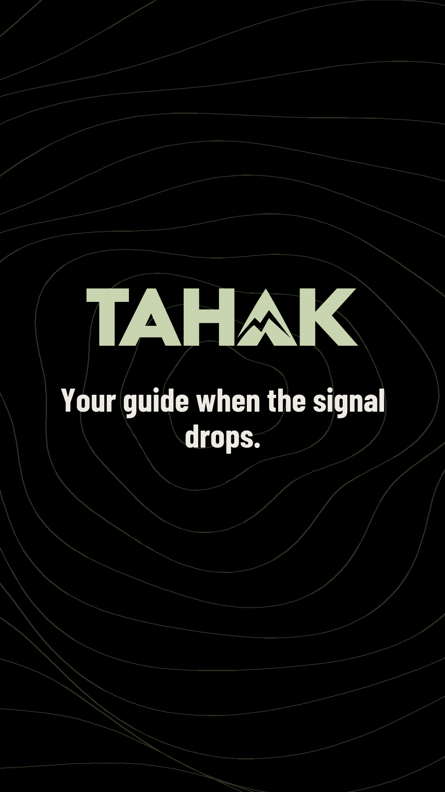
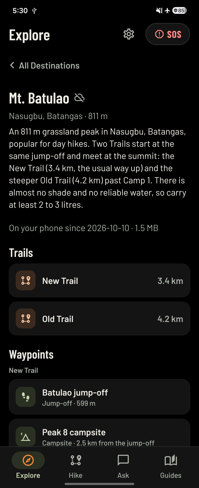
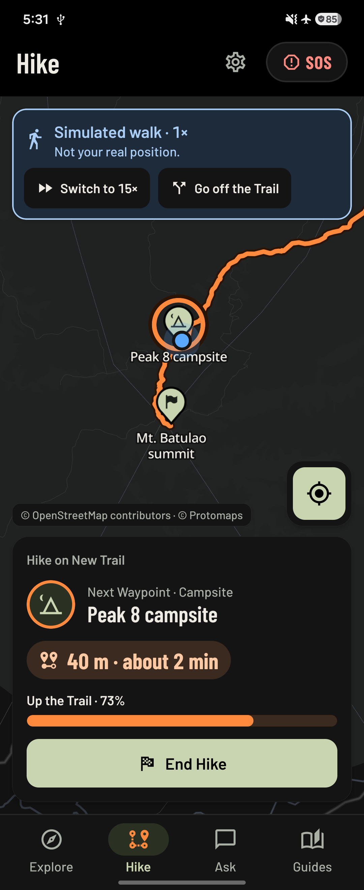
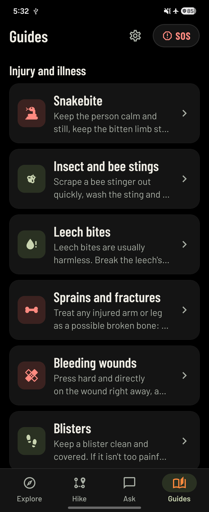
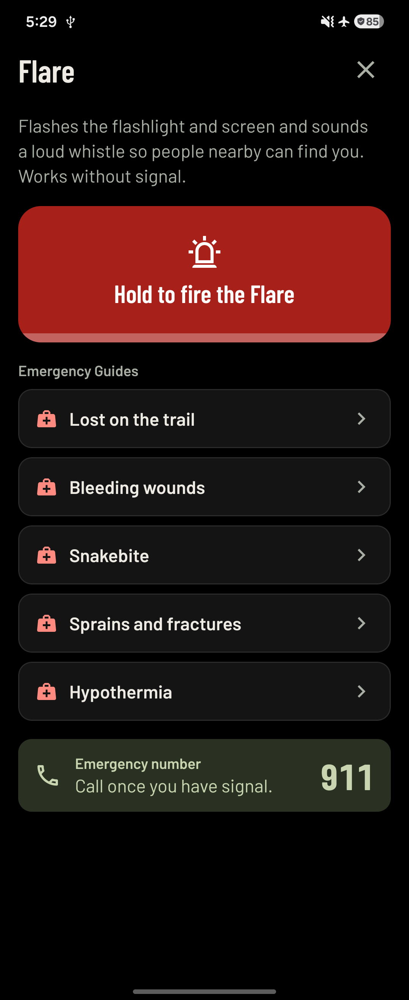
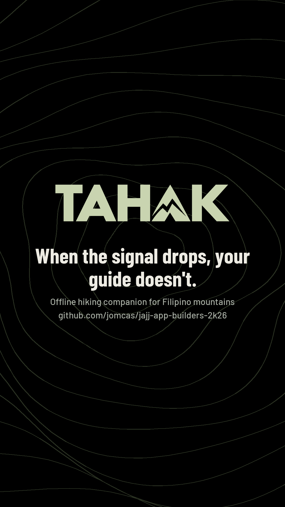

Phone in hand
swipe → airplane mode
swipe → airplane mode



Deviation
red banner · arrow · buzz · tone
red banner · arrow · buzz · tone
Ask in Taglish
answer + source chips
answer + source chips
Fallback: trail notes


